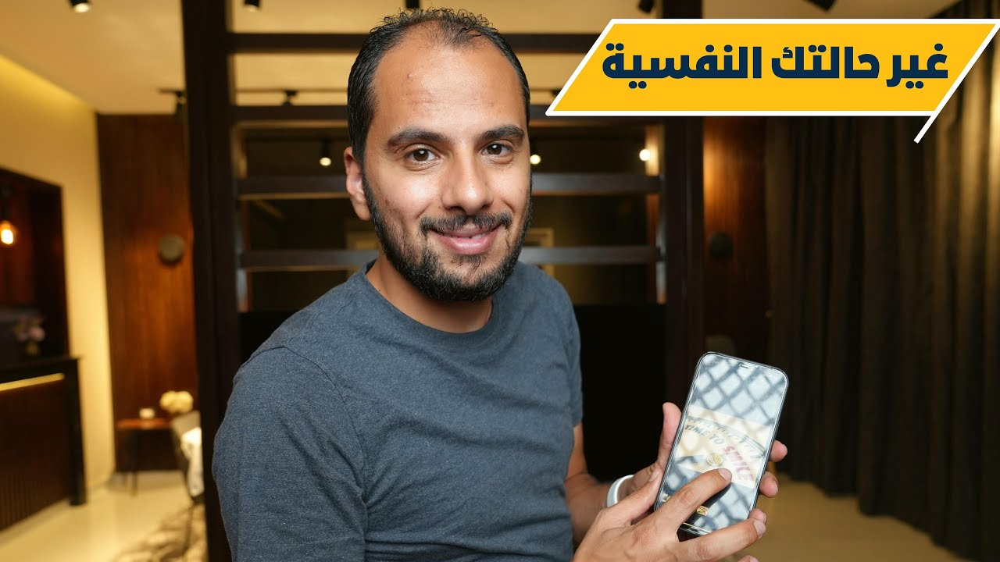

تطوير الذات
كيف تتحكم في حالتك النفسية ؟
3 صحاب استنوا أزواجهم في نفس الموقف، وكل واحدة فيهم كانت في مود مختلف: غضب، وخوف، وهدوء. بحسب Anthony Robbins، حالتك النفسية بيتحكم فيها حاجتين: حوارك الداخلي وحالتك الجسمانية. وفي المقال ده نصايح تساعدك تشتغل على الاتنين.

شغّل الحلقةتخيل معايا لو فيه Mobile Application نقدر بيه نغيّر المود بتاعنا: بضغطة زر نروح على وضع فرحان فنفرح، وبضغطة زرار تانية نروح على مود الكآبة ونمد بوزنا شبرين قدامنا. اختراع حلو، صح؟
طب لو افترضنا إن الاختراع ده موجود، تفتكر حد فينا هيفعّل مود الكآبة ده؟ ولا هيبقى من الأوضاع اللي موجودة بس مش بتتفعّل؟ للأسف كنا هنفعّل وضع الكآبة والملل والزهق أوقات كتير، لأن الاختراع ده موجود فعلًا وكلنا بنستخدمه. بس هو مش Mobile Application، هو ممكن نسميه Mind Application. وفي المقال ده هشرح لك إزاي تتحكم في حالتك النفسية وتغيّر مودك بضغطة زرار واحدة.
على فكرة، «مود الكآبة» هنا أقصد بيه المزاج الوحش العادي اللي بيجي ويروح، مش الاكتئاب. الاكتئاب حالة صحية، حزن مستمر لأسابيع أو شهور، ولو حاسس إنك مكتئب مهم تكلم دكتور؛ والنصايح اللي في المقال ده مش بديل عن العلاج.1
ليه نفس الموقف بيحط كل واحد في مود مختلف؟ 1:08
خليني أحكي لك موقف كده: 3 بنات صحاب قرروا يخرجوا مع بعض، والمرة دي قرروا يعزموا أزواجهم معاهم. ولأن الأزواج ملتزمين بشغل، اتفقوا إن البنات يخرجوا من بداية اليوم، وعلى آخر اليوم، تحديدًا الساعة 6، يجيلهم أزواجهم. ولما جت الساعة 6، محدش من التلات أزواج جه، والأغرب إن تليفوناتهم ما كانتش مجمّعة.
وبعد ساعة من التأخير، ردود الأفعال بدأت تتفاوت. الصديقة الأولى بقت متعصبة جدًا، وبدأت تقول: هو مش بيحترمني، لو كان بيحترمني كان احترم معادي. والفكرة دي تحديدًا، إن جوزها مش بيحترمها، خلّتها عصبية جدًا ومضغوطة.
الصديقة التانية كانت قلقانة ومتوترة برضو، بس لسبب تاني خالص: كانت بتفكر إن ممكن يكون جوزها جراله حاجة، أو عمل حادثة، أو تعب في الشغل. والأفكار دي تحديدًا كانت السبب في قلقها الشديد. أما التالتة فكانت عكس الاتنين: هادية جدًا، وقاعدة تهديهم وتقول لهم يمكن يكون فيه شوية زحمة في الطريق، وشوية وهيكونوا موجودين.
وبغض النظر عن السبب الحقيقي ورا تأخير الأزواج، لو ركزت هتلاقي إن التلات زوجات كانوا في نفس الموقف، لكن كل واحدة كانت في مود مختلف. واحدة فعّلت مود الغضب، فكانت حاسة بعدم تقدير من جوزها. والتانية فعّلت مود الخوف، فكانت حاسة بقلق ومستنية كارثة. والتالتة فعّلت مود الهدوء والسكينة، فما كانتش شايفة أي مشكلة في تأخيره.
طب إيه الفرق بين التلاتة؟ وإيه اللي خلّى حالتهم النفسية مختلفة كده؟ وأكتر من كده: ممكن كل واحدة فيهم تتعرض لنفس الموقف أكتر من مرة، وكل مرة يكون رد فعلها مختلف. وده نفس اللي بيحصل معانا: ليه أوقات بنقبل هزار شديد من أصحابنا، وفي وقت تاني نغضب ونثور على نفس الهزار؟
إيه اللي بيتحكم في حالتك النفسية بحسب Robbins؟ 2:35
Anthony Robbins (أنتوني روبنز) في كتابه Unlimited Power (قدرات غير محدودة) بيتكلم عن الموضوع ده في الفصل التالت تحديدًا، واللي عنوانه «قوة الحالة النفسية».2 وبيقول إن فيه حاجتين بيتحكموا في حالتنا النفسية: أول حاجة طريقة تفكيرك في الوقت الحالي، ويقصد بيها تحديدًا حوارك الداخلي مع نفسك. والحاجة التانية حالتك الجسمانية.
وبيقول كمان إن الاتنين بيأثروا على بعض. لو إنت تعبان جسمانيًا، ده ممكن يخليك تفكر في الأشياء بطريقة مختلفة، زي إنك تعتبر الهزار العادي إهانة ليك. والعكس: لو اتعرضت لموقف محرج، تفكيرك في الإحراج ده يخلّي وشك يحمر، وتعرق، وإيدك تترعش.
وبحسب كلام Robbins، لو محتاج تتحكم في حالتك النفسية لازم تشتغل على الحاجتين دول: طريقة تفكيرك أو حوارك الداخلي، وحالتك الجسمانية، وتخليهم في أفضل حالاتهم. ولحالتك الجسمانية إنت محتاج أكل صحي ونوم كويس وشوية رياضة؛ بيهم هتقدر تقلل الأوقات اللي بتحس فيها بإرهاق أو خمول.
إزاي عقلك بيفسر المواقف؟ 3:21
أما بالنسبة لطريقة التفكير أو الحوار الداخلي، فلازم تفهم الأول العملية بتمشي إزاي. إحنا بنستقبل الأحداث والمواقف والتجارب من خلال الحواس الخمسة، والحواس دي بتنقل المعلومات للمخ، والمخ بيبدأ يفسر الأحداث والمواقف علشان تبقى واضحة.
المشكلة هنا إن عقلك بيفسر الحدث وفقًا للمعتقدات بتاعتك وطريقة برمجتك. وبالتالي ممكن ياخد موقف عادي ويفسره تفسير مش عادي. وعلى حسب تفسير عقلك للموقف بيتغير المود: من الهدوء للغضب، ومن الثقة للتوتر. وده اللي بيتسمى بالتمثيل الداخلي، أو طريقة تفكيرك أو حوارك الداخلي.
سيبك من المصطلحات، المهم إن الفكرة توصل. واللي جاي أسهل: شوية نصايح أو تدريبات، مع الاستمرار فيهم هتقدر تتحكم في حوارك الداخلي، وبالتالي تحافظ على مود هادي ومستقر أغلب الوقت.
إزاي التفكير في الماضي والمستقبل بيغيّر مودك؟ 4:10
واحدة من أهم أسباب تغيير مودنا فجأة هي التفكير في الماضي أو المستقبل، لدرجة إننا ممكن نعيش الحدث وكأنه بيحصل دلوقتي: مشاكل اتعرضنا لها زمان، أو أخطاء وقعنا فيها وندمانين عليها، أو حتى فقدان شخص قريب مننا. كل الأفكار دي بتجمّع علينا المشاعر، وبيها بيتغير مودنا، ومش بس كده، دي بتدخلنا في حالة نفسية سيئة جدًا.
وفيه ناس عندهم قلق وخوف من المستقبل، فبيندمجوا في التفكير دايمًا في اللي ممكن يحصل بكرة. والأفكار والمشاعر دي كفيلة إنها تغيّر مودهم، وتخليهم دايمًا عصبيين ومضغوطين.
عشان كده حاول تدرب نفسك على التفكير في الحاضر واللحظة اللي إنت بتعيشها. لو جت لك أفكار من الماضي، رد عليها بفكرة إن الماضي عدّى وانتهى، وإن الحاضر أهم. ولو فيه حاجات ندمت عليها قبل كده، فعلى الأقل دلوقتي إنت ضامن إنك مش هتكررها. ولو فقدت حد عزيز عليك، ما تركزش في فكرة إنك فقدته، وحاول تركز على فكرة إنك كنت محظوظ علشان عشت معاه السنين واللحظات اللي عشتها.
وبنفس الطريقة واجه أفكار الخوف من المستقبل، وقول لنفسك دايمًا إن بكرة هيبقى أحسن، ولو ركزت في الحاضر هتخلّي المستقبل مختلف. والتركيز في الحاضر له فايدة جميلة جدًا: بيه بتعمل مستقبل أحسن، ولما توصل للمستقبل ده هتكون سِبت وراك ماضي حلو. فتركيزك على الحاضر مش بس بيظبط مودك، ده بيظبط حياتك كلها.
ليه لازم ترفض الافتراضات؟ 5:30
ارجع لمثال الزوجات: اللي وقّعهم في مشاعر سلبية وغيّر مودهم كان افتراضهم لحاجات مش موجودة في الحقيقة، لكن عقلهم صدّقها ودعمها بمشاعر. عشان كده عاوزك ترفض أي افتراضات. ولما تجيلك فرضيات فيها مشاعر سلبية، فكّر نفسك إنها خدعة بيعملها فيك عقلك، وإن الواقع مختلف.
وفي موضوع الافتراضات فيه مشكلة بيقع فيها أغلبنا: لما بنفكر إننا قارئين أفكار اللي قدامنا. «أصلها بتعمل كده علشان تغيظني»، رغم إنها ممكن تكون مش شايفاكي أصلًا. أو حد بيقعد يقنع نفسه إن الناس شايفينه وحش، ويبتدي يفترض حاجات مش موجودة أصلًا. وده مش بس بيغيّر المود ويدخلك في حالة نفسية سيئة، ده كمان بيأثر على ثقتك في نفسك، وبيخليك تبان كشخص مهزوز قدام الناس.
عشان كده درّب نفسك دايمًا إنك ترفض أي افتراضات، وقول لنفسك: طالما الشخص اللي قدامي ما قالهاش، ما تبقاش حقيقة. وطالما أنا مش عندي المعلومة كاملة، يبقى ما فيش قصة أصلًا.
الزرار اللي بيغيّر مودك فين؟ 6:19
الحالة النفسية اللي إنت فيها دلوقتي بتعكس أفكارك وحوارك الداخلي مع نفسك، وكل المواقف اللي بتحصل ممكن تتشاف من أكتر من منظور. فحاول دايمًا تشوفها من المنظور اللي يريحك، مش اللي يتعبك.
وما أقصدش طبعًا إنك ما تكونش واقعي؛ بالعكس، أنا بتكلم عن الواقعية في حد ذاتها. لأن الواقع بيقول إن عقلنا بيخدعنا، وبينقل لنا الصورة اللي بتنسجم مع أفكارنا، بغض النظر إن كانت الصورة دي حقيقية 100% ولا لأ. فخلّي بالك علشان ما تقعش في الفخ ده.
وما تنساش إن حالتنا الجسمانية ليها تأثير قوي على حالتنا النفسية وأفكارنا. فاهتم بأكلك ونومك ونشاطك، وصدق اللي قال: «العقل السليم في الجسم السليم». ولو فهمت الأفكار دي، يبقى معاك الزرار اللي تقدر تغيّر بيه مودك، وتخلي حالتك النفسية هادية ومستقرة. وأعتقد دي أكتر حلقة محتاج أفكرك فيها بشعارنا: «اليوم أفضل من الأمس، وغدًا سيكون الأفضل».
فصول الحلقة
أسئلة شائعة
إيه اللي بيتحكم في حالتنا النفسية بحسب Robbins؟
بحسب Anthony Robbins، فيه حاجتين: طريقة تفكيرك في الوقت الحالي، يعني حوارك الداخلي مع نفسك، وحالتك الجسمانية. والاتنين بيأثروا على بعض.
ليه نفس الموقف ممكن يعمل فينا ردود أفعال مختلفة؟
لأن عقلك بيفسر الحدث وفقًا لمعتقداتك وطريقة برمجتك، فممكن ياخد موقف عادي ويفسره تفسير مش عادي. وعلى حسب التفسير ده بيتغير المود، من الهدوء للغضب ومن الثقة للتوتر.
أعمل إيه لما أفكار الماضي تغيّر مودي؟
درّب نفسك على التفكير في الحاضر، ورد على أفكار الماضي بفكرة إن الماضي عدّى وانتهى وإن الحاضر أهم. ولو فيه حاجات ندمت عليها، فعلى الأقل دلوقتي إنت ضامن إنك مش هتكررها.
إزاي أبطّل أفترض حاجات تضايقني؟
لما تجيلك فرضيات فيها مشاعر سلبية، فكّر نفسك إنها خدعة بيعملها فيك عقلك. وقول لنفسك: طالما الشخص اللي قدامي ما قالهاش، ما تبقاش حقيقة.